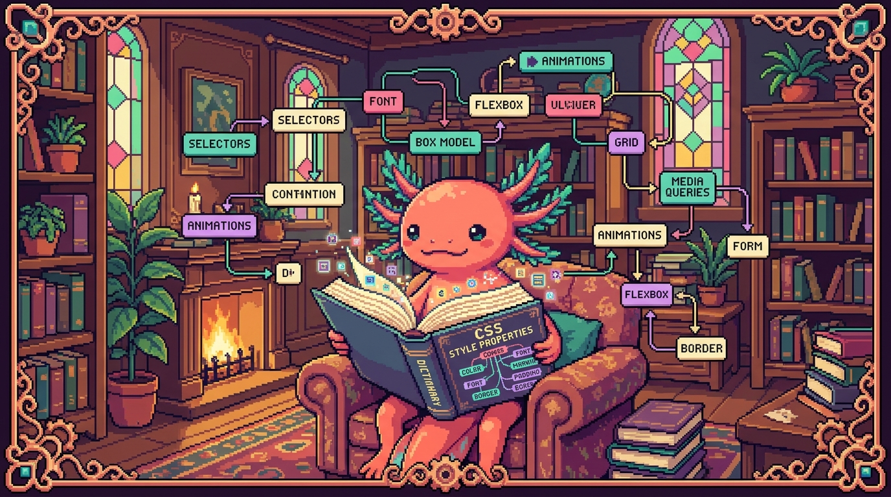

Capítulo 15 — Glosario de CSS y mapa

¡Llegaste al final del módulo de CSS! 🎉 Bit, el ajolote, flota feliz en su pecera, porque entre los dos recorrieron un montón de terreno: selectores, cajas, colores, flexbox, grid, variables y bastante más. Este capítulo no se parece a los anteriores. No vas a aprender nada nuevo; vas a ordenar lo que ya tienes en la cabeza. Es como cuando terminas un rompecabezas y por fin ves la imagen entera. Aquí encontrarás un glosario alfabético con cada término resuelto en pocas líneas, un mapa mental para entender cómo encaja todo y un repaso final para confirmar que el módulo quedó dominado. Hazlo sin prisa, como tomando un café: lee, asiente con la cabeza y date cuenta de lo lejos que llegaste.
1. Cómo usar este glosario
Piensa en CSS como una ciudad donde cada término es una calle. Durante el módulo las recorriste de a una. Lo que vamos a hacer ahora es colgar el plano en la pared para verla entera desde arriba.
Cada entrada del glosario tiene la misma estructura:
- Definición simple: qué es, dicho con palabras de todos los días.
- Para qué sirve: por qué deberías prestarle atención.
- Dónde se usa en un repo real: en cuál de tus proyectos (tunal-digital, RachaSimple, Faro/Organizer) aparece de verdad.
💡 Tip
No trates de memorizar el glosario de una sentada. Léelo hoy, vuelve mañana y fíjate cuántos términos ya te suenan. La memoria de los conceptos de programación se construye repasando de a poco, con espacios entremedio, no a base de atracones.
🔎 En tu código
Casi todos los ejemplos de este capítulo apuntan a
styles.cssde tunal-digital, que fue el archivo central del módulo. Tenlo abierto en otra pestaña mientras lees: ver el término real, en su sitio, vale más que mil definiciones.
2. Glosario alfabético
Vamos en orden alfabético, así puedes volver a buscar cualquier palabra rápido, igual que en un diccionario.
A — B
🟦 ¿Qué significa? — Atributo (selector de atributo)
Un selector que apunta a elementos según un atributo HTML, como
[type="email"]o[href]. Te permite estilar elementos sin tener que ponerles una clase. Enstyles.cssde tunal-digital podrías usarinput[type="text"]para darle el mismo borde a todos los campos de texto del formulario de contacto.🟦 ¿Qué significa? — Border (borde)
Es la línea que rodea una caja, justo entre el padding y el margin. Sirve para separar elementos a la vista y darles forma. En tunal-digital, las tarjetas de servicios suelen llevar
border: 1px solid #ddd;para que se vea claramente dónde empieza y termina cada una.🟦 ¿Qué significa? — Box model (modelo de cajas)
La idea de que cada elemento es una caja con cuatro capas: contenido, padding, border y margin. Te ayuda a entender cuánto espacio ocupa cualquier cosa en la página. Es la base de todo el layout de
styles.css: si no lo tienes claro, los espacios se vuelven un misterio sin solución.🟦 ¿Qué significa? — box-sizing
Una propiedad que decide si el ancho que escribes incluye el padding y el border (
border-box) o no (content-box). Sirve para que las cajas no se "inflen" cuando menos lo esperas. Enstyles.csscasi siempre se ponebox-sizing: border-box;al principio, para que las medidas sean predecibles.
/* Patrón clásico al inicio de styles.css */
* {
box-sizing: border-box;
margin: 0;
padding: 0;
}
C
🟦 ¿Qué significa? — Cascada (cascade)
El conjunto de reglas que decide qué estilo gana cuando varios apuntan al mismo elemento. Sirve para resolver los conflictos de forma ordenada: cuentan el origen, la especificidad y el orden en que aparecen. La "C" de CSS viene precisamente de "Cascading". En
styles.css, la cascada es la que decide, por ejemplo, si gana el color delbodyo el de una clase más específica.🟦 ¿Qué significa? — Clase (class)
Un selector que empieza con punto, como
.boton, y apunta a todos los elementos que llevan eseclassen el HTML. Te permite reutilizar el mismo estilo en muchos sitios a la vez. En tunal-digital,.tarjeta-serviciose aplica a cada bloque de servicio que se repite.🟦 ¿Qué significa? — Color
El valor que define los tonos del texto, los fondos y los bordes. Se escribe con nombres (
red), hex (#3b82f6),rgb()ohsl(). Sirve para darle identidad visual a la página. Enstyles.css, los colores de marca de tunal-digital suelen guardarse en variables para no repetir el mismo hex por todos lados.🟦 ¿Qué significa? — Comentario
Texto que el navegador ignora por completo, escrito entre
/* */. Sirve para dejarle notas a tu yo del futuro o a tu equipo. En cualquierstyles.cssbien cuidado verás comentarios como/* Sección hero */separando los bloques.
D — E
🟦 ¿Qué significa? — Declaración
La pareja formada por una propiedad y su valor, como
color: blue;. Es la unidad mínima de estilo: una orden concreta. Cada línea dentro de las llaves{ }destyles.csses una declaración.🟦 ¿Qué significa? — display
La propiedad que decide cómo se comporta una caja: en bloque (
block), en línea (inline), como contenedor flexible (flex) o de rejilla (grid). Sirve para controlar cómo fluye el layout. Enstyles.css, ponerdisplay: flex;en el<nav>de tunal-digital alinea los enlaces en una fila.🟦 ¿Qué significa? — Especificidad (specificity)
Un sistema de "puntos" que mide qué tan específico es un selector; el más específico gana en la cascada. Sirve para anticipar qué estilo va a aplicarse. Un id (
#hero) pesa más que una clase (.hero), y esa pesa más que una etiqueta (section). Tener esto claro te ahorra horas de pelea constyles.css.
/* Más específico (id) gana sobre menos específico (etiqueta) */
section { color: gray; } /* especificidad baja */
#hero { color: black; } /* especificidad alta: este gana */
F
🟦 ¿Qué significa? — Flexbox
Un sistema de layout en una dimensión (fila o columna) que reparte el espacio entre los elementos. Sirve para alinear y distribuir cosas con poco esfuerzo, como una barra de navegación o una fila de botones. En tunal-digital, el menú superior usa flexbox; en RachaSimple, Tailwind expresa lo mismo con clases como
flex items-center.🟦 ¿Qué significa? — flex-direction
La propiedad de flexbox que decide si los hijos van en fila (
row) o en columna (column). Sirve para cambiar la orientación sin tocar el HTML. Enstyles.css, pasar aflex-direction: column;apila el menú en las pantallas pequeñas.🟦 ¿Qué significa? — Fuente (font-family)
La propiedad que elige el tipo de letra. Es lo que le da voz y carácter al texto. En tunal-digital se suele definir
font-familyen elbodypara que toda la página herede la misma tipografía.
G
🟦 ¿Qué significa? — Grid (CSS Grid)
Un sistema de layout en dos dimensiones (filas y columnas a la vez). Sirve para armar cuadrículas completas, como una galería o un dashboard. En tunal-digital, la sección de servicios puede ser una rejilla con
display: grid; grid-template-columns: repeat(3, 1fr);.🟦 ¿Qué significa? — gap
La propiedad que pone espacio entre los elementos de un flexbox o un grid, sin tocar los bordes externos. Sirve para separar tarjetas o columnas de forma limpia, y reemplaza el viejo truco de ponerle margin a cada hijo. En
styles.css,gap: 1rem;separa las tarjetas de servicios.
.servicios {
display: grid;
grid-template-columns: repeat(3, 1fr); /* 3 columnas iguales */
gap: 1.5rem; /* espacio entre tarjetas */
}
H
🟦 ¿Qué significa? — Herencia (inheritance)
El mecanismo por el que ciertos estilos pasan solos de un elemento padre a sus hijos (como
colorofont-family). Te ahorra repetir reglas una y otra vez. Enstyles.css, si ponescoloren elbody, casi todo el texto de tunal-digital lo hereda sin que escribas nada más.🟦 ¿Qué significa? — Hex (color hexadecimal)
Una forma de escribir colores con
#y seis dígitos, como#3b82f6. Sirve para precisar tonos exactos de marca. En las variables de color de tunal-digital, los valores de marca casi siempre están en hex.🟦 ¿Qué significa? — hover (pseudo-clase :hover)
Un estado que se activa cuando el cursor pasa por encima de un elemento. Sirve para darle feedback al usuario, por ejemplo cambiar el color de un botón al apuntarlo. En
styles.css,.boton:hover { background: #2563eb; }hace que el botón reaccione al ratón.
I — L
🟦 ¿Qué significa? — id (selector de id)
Un selector que empieza con
#, como#hero, y apunta a un único elemento. Sirve para estilar algo que aparece una sola vez en la página. Pesa muchísimo en especificidad, así que enstyles.cssconviene usarlo con cuidado.🟦 ¿Qué significa? — inline (display inline)
Un comportamiento de caja que fluye dentro del texto, sin saltos de línea, como un
<span>o un<a>. Sirve para resaltar palabras sin partir el párrafo. Enstyles.css, los enlaces dentro de un texto son inline por defecto.🟦 ¿Qué significa? — !important
Una marca que obliga a una declaración a ganar casi siempre, saltándose la especificidad normal. Sirve para emergencias, pero conviene evitarla porque ensucia la cascada. Si ves
!importantpor todas partes en unstyles.css, suele ser señal de que algo está mal ordenado.
M
🟦 ¿Qué significa? — Margin (margen)
El espacio por fuera del borde de una caja, el que la separa de sus vecinas. Sirve para dejar aire entre los elementos. En
styles.css,margin: 0 auto;es el truco de toda la vida para centrar un contenedor horizontalmente en tunal-digital.🟦 ¿Qué significa? — Media query
Una regla
@mediaque aplica estilos solo si se cumple una condición, como cierto ancho de pantalla. Sirve para hacer diseño responsive, es decir, que se adapte a móvil y a escritorio. Enstyles.css,@media (max-width: 600px)reacomoda el menú de tunal-digital en los celulares.
/* Responsive: en pantallas pequeñas, una sola columna */
@media (max-width: 600px) {
.servicios {
grid-template-columns: 1fr;
}
}
O — P
🟦 ¿Qué significa? — Padding (relleno)
El espacio por dentro de la caja, entre el contenido y el borde. Sirve para que el texto no quede pegado al borde, apretado. En
styles.css, las tarjetas de tunal-digital llevanpadding: 1rem;para respirar un poco por dentro.🟦 ¿Qué significa? — position
La propiedad que controla cómo se ubica una caja:
static(lo normal),relative,absolute,fixedosticky. Sirve para sacar elementos del flujo o fijarlos en pantalla. Enstyles.css, un encabezado que se queda arriba mientras haces scroll usaposition: sticky; top: 0;.🟦 ¿Qué significa? — Propiedad
El nombre de la característica que quieres cambiar, como
color,marginodisplay. Es el "qué" de cada orden de estilo. En la declaracióncolor: blue;, la propiedad escolor.🟦 ¿Qué significa? — Pseudo-clase
Una palabra clave con
:que apunta a un estado del elemento, como:hover,:focuso:first-child. Sirve para estilar según lo que ocurre o según la posición. Enstyles.css,:focusmejora la accesibilidad de los campos del formulario de tunal-digital.🟦 ¿Qué significa? — Pseudo-elemento
Una palabra clave con
::que apunta a una parte del elemento o crea contenido nuevo, como::before,::aftero::placeholder. Sirve para decorar sin tocar el HTML. Enstyles.css,::afterpuede añadirle un pequeño adorno a un título.
R — S
🟦 ¿Qué significa? — rem / em (unidades relativas)
Unidades de tamaño que dependen de la fuente:
remse basa en el tamaño raíz del documento yemen el del propio elemento. Sirven para escalar de forma consistente y accesible. Enstyles.css, usarremparapaddingy tipografía mantiene tunal-digital bien proporcionado cuando alguien cambia el zoom.🟦 ¿Qué significa? — Regla (rule)
El bloque completo: un selector más sus declaraciones entre llaves. Es la unidad que el navegador lee y aplica. Cada
selector { ... }destyles.csses una regla.🟦 ¿Qué significa? — Selector
El patrón que decide a qué elementos se aplica un estilo, como
.boton,#heroop. Sirve para apuntar con precisión. Es el primer ingrediente de toda regla enstyles.css.
T
🟦 ¿Qué significa? — Tailwind (CSS de utilidades)
Un framework que te da clases pequeñas y listas para usar (
p-4,flex,text-blue-500) que escribes directamente en el HTML/JSX. Sirve para estilar rápido sin escribir CSS a mano. RachaSimple y Faro/Organizer lo usan; tunal-digital no (ahí escribesstyles.cssa mano).🟦 ¿Qué significa? — transition
La propiedad que hace que un cambio de estilo ocurra de forma gradual en vez de instantánea. Sirve para suavizar efectos, como un botón que cambia de color poco a poco al pasar el cursor. En
styles.css,transition: background 0.2s;hace que el:hoverse sienta suave.
.boton {
background: #3b82f6;
transition: background 0.2s ease; /* cambio suave */
}
.boton:hover {
background: #2563eb;
}
U — V
🟦 ¿Qué significa? — Unidad
El sufijo que le da medida a un número:
px,%,rem,em,vh,vw. Sirve para decir "cuánto", ya sea de forma exacta o relativa. Enstyles.css, mezclaspxpara los detalles finos y%orempara los tamaños que tienen que adaptarse.🟦 ¿Qué significa? — Valor
El "cuánto" o el "cuál" de una declaración, como
blueencolor: blue;o1remenpadding: 1rem;. Es la respuesta concreta que le das a la propiedad. Cada propiedad acepta sus propios tipos de valor.🟦 ¿Qué significa? — Variable CSS (custom property)
Un valor con nombre que defines una vez (
--color-marca: #3b82f6;) y reutilizas convar(--color-marca). Sirve para cambiar toda la paleta desde un solo lugar y para armar temas (claro/oscuro). El propioestilos.cssde este manual usa variables para sus temas; y enstyles.cssde tunal-digital guardan así los colores de marca.
:root {
--color-marca: #3b82f6;
--espacio: 1rem;
}
.boton {
background: var(--color-marca);
padding: var(--espacio);
}
🟦 ¿Qué significa? — vh / vw (viewport height/width)
Unidades relativas al tamaño de la ventana:
100vhes toda la altura visible y100vwtodo el ancho. Sirven para secciones a pantalla completa. Enstyles.css, una sección hero conmin-height: 100vh;ocupa toda la pantalla al cargar tunal-digital.
Z
🟦 ¿Qué significa? — z-index
Un número que decide qué elemento queda encima de otro cuando se superponen. Sirve para controlar las capas, como un menú que tiene que tapar el contenido. En
styles.css, un encabezadostickysuele llevar unz-indexalto para que nada lo cubra. Solo funciona en elementos cuyopositionno seastatic.⚠️ Cuidado
z-indexsolo hace efecto si el elemento tieneposition: relative,absolute,fixedosticky. Si lo pones sobre un elementostatic, no pasa absolutamente nada, y te vas a volver loco buscando el porqué. Bit ya cayó en esa trampa más de una vez. 🐾
3. Mapa mental de CSS
Aquí tienes la ciudad vista desde arriba. Léelo de arriba hacia abajo: las ramas grandes son los grandes temas del módulo, y las hojas son los términos que ya conoces.
┌─────────────────────────┐
│ CSS │
│ (dar estilo al HTML) │
└────────────┬────────────┘
│
┌────────────┬───────────────┼───────────────┬────────────────┐
│ │ │ │ │
┌────▼────┐ ┌────▼─────┐ ┌─────▼──────┐ ┌──────▼──────┐ ┌──────▼──────┐
│ SINTAXIS│ │ CÓMO GANA│ │ CAJAS │ │ LAYOUT │ │ DINÁMICO Y │
│ │ │ UN ESTILO│ │ (box model)│ │ │ │ REUTILIZAR │
└────┬────┘ └────┬─────┘ └─────┬──────┘ └──────┬──────┘ └──────┬──────┘
│ │ │ │ │
• selector • cascada • content • display • variables
• propiedad • especificidad • padding • flexbox (var/--)
• valor • herencia • border • grid • transition
• declaración• !important • margin • gap • pseudo-clase
• regla • box-sizing • position (:hover)
• comentario • width/height • z-index • pseudo-elemento
• media query (::before)
• Tailwind
(en RachaSimple/
Faro)
💡 Tip
Fíjate en cómo las cinco ramas cuentan una historia de principio a fin: primero escribes una regla (sintaxis), luego el navegador decide cuál gana (cascada), esa regla afecta a una caja, las cajas se acomodan con el layout, y al final le das vida y orden con las cosas dinámicas y reutilizables. Si entiendes esa secuencia, entiendes CSS.
🔎 En tu código
El mapa vale igual aunque uses Tailwind. Cuando en RachaSimple escribes
class="flex gap-4 p-2 hover:bg-blue-600", estás usando display + gap + padding + pseudo-clase: exactamente los mismos conceptos del mapa, solo que con nombres cortos. Tailwind no reemplaza a CSS, lo empaqueta.
4. Repaso final (en vez de teoría nueva)
En lugar de meterte algo nuevo, recorramos rápido los puntos clave del módulo, como quien repasa los apuntes antes de cerrar el cuaderno.
1. Toda regla tiene tres partes. Selector, propiedad y valor. Si te pierdes, vuelve a esto: ¿a quién? (selector), ¿qué le cambio? (propiedad), ¿a cuánto? (valor).
2. Cuando dos estilos pelean, gana la combinación de cascada + especificidad + orden. Lo más específico; y a igual especificidad, lo que aparece después en el archivo. La herencia se encarga de rellenar lo que no especificas.
3. Todo es una caja. Contenido, padding, border, margin. Con box-sizing: border-box;, medir se vuelve fácil.
4. Para acomodar cajas usas flexbox (una dimensión) o grid (dos dimensiones). Y gap para separarlas con elegancia.
5. Para que se adapte a móvil, usas media queries. Y para reutilizar valores y armar temas, usas variables CSS.
🟦 ¿Qué significa? — Responsive (diseño adaptable)
Un sitio que se ve bien en cualquier tamaño de pantalla, desde el celular hasta el monitor grande. Se logra con media queries y unidades relativas. Sirve para no dejar fuera a quien navega desde el móvil, que hoy es la mayoría. En tunal-digital, el responsive es lo que hace que el menú se reacomode en pantallas pequeñas.
⚠️ Cuidado
No confundas padding (espacio por dentro) con margin (espacio por fuera). Es el error más típico al empezar. Truco de Bit: el padding es el acolchado dentro de un sobre; el margin es la distancia entre dos sobres sobre la mesa. ✉️
💡 Tip
Si alguna vez un estilo "no funciona", revísalo en este orden: (1) ¿el selector apunta bien? (2) ¿hay otra regla más específica ganándole? (3) ¿el elemento tiene el
displayo elpositioncorrecto para lo que intentas? El 90% de los problemas de CSS está en uno de esos tres.
5. Lo que sigue
Cerraste el módulo de CSS con el mapa entero en la cabeza. Ya sabes escribir reglas, ganar peleas de cascada, construir layouts y reutilizar estilos. Cuando entres a frameworks como Tailwind en RachaSimple o Faro/Organizer, no vas a estar aprendiendo algo nuevo desde cero: vas a estar aplicando estos mismos conceptos con otra ropa. Y eso, créeme, es una ventaja enorme.
Bit te choca la patita. 🐾 Próxima parada: darle interactividad de verdad con JavaScript, donde el main.js de tunal-digital por fin tendrá su capítulo. Pero esa es otra historia.
✅ Checklist — ¿ya domino esto?
- [ ] Sé nombrar las tres partes de una regla: selector, propiedad y valor.
- [ ] Puedo explicar con mis palabras qué es la cascada y la especificidad.
- [ ] Distingo padding de margin sin dudar.
- [ ] Entiendo el modelo de cajas y para qué sirve
box-sizing: border-box;. - [ ] Sé cuándo usar flexbox (una dimensión) y cuándo grid (dos dimensiones).
- [ ] Puedo escribir una media query básica para hacer un sitio responsive.
- [ ] Sé declarar y reutilizar una variable CSS con
var(). - [ ] Reconozco pseudo-clases (
:hover) y pseudo-elementos (::before). - [ ] Entiendo que Tailwind en RachaSimple y Faro usa estos mismos conceptos con clases cortas.
- [ ] Puedo dibujar de memoria el mapa mental de las cinco ramas de CSS.
🧪 Ejercicios
-
Sin computadora. En una hoja, escribe los cinco grandes temas del mapa mental (sintaxis, cascada, cajas, layout, dinámico) y cuelga al menos cuatro términos bajo cada uno, de memoria. Luego compara con el mapa del capítulo.
-
Sin computadora. Explícale a alguien (o a Bit en voz alta) la diferencia entre padding y margin usando tu propia analogía, distinta a la del sobre.
-
💻 Abre
styles.cssde tunal-digital y busca un ejemplo real de cada uno de estos términos: una clase, una pseudo-clase, una media query y una variable CSS. Anota en qué línea está cada uno. -
💻 En
styles.css, encuentra una regla y reescríbela en un comentario nombrando sus partes, así:/* selector: .boton | propiedad: color | valor: white */. Hazlo con tres reglas distintas. -
💻 Toma un componente de RachaSimple con clases de Tailwind (por ejemplo algo con
flex gap-4 p-2) y, debajo, escribe en un comentario el CSS "tradicional" equivalente que harías enstyles.css. Comprueba que entiendes la traducción. -
💻 Crea un archivo nuevo
repaso.cssy, sin mirar el manual, escribe de memoria: una variable en:root, una regla con:hoverytransition, y una media query. Luego revisa el glosario para verificar que la sintaxis quedó bien.